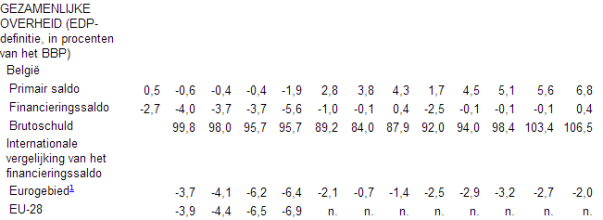
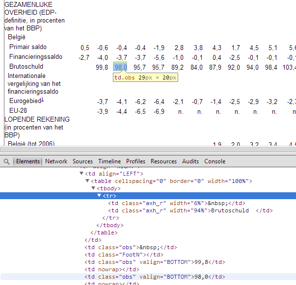
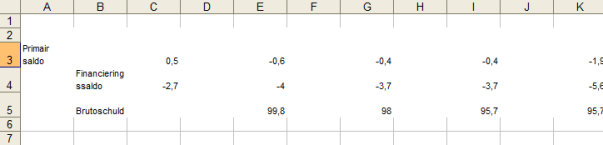

Begrotingssaldo
Inleiding
Op de avond van zaterdag 15 februari 2014 zag ik
een tweet passeren over de evolutie van de staatsschuld van België. Er werd een allusie gemaakt op een uitspraak van minister-president van Vlaanderen Kris Peeters (CD&V) dat CD&V "bekwamer" is dan N-VA.

Er zijn enkele dingen die we moeten opmerken in bovenstaande grafiek:
- De cijfers zijn niet volledig. In het blauw zien we de overheidsschuld vanaf 1960, in het oranje het begrotingssaldo vanaf 1970. Beide concepten zijn uitgedrukt in procent van het bbp.
- In 1980 werd het schuldconcept geherdefinieerd, met als gevolg dat de statistieken van de jaren erna 20% van het bbp hoger liggen dan de statistieken van de jaren ervoor. Dit werd enkel aangeduid in de statistiek van 1980...
- 1981 wordt aangeduid als een rampjaar, maar 1982 en 1983 moeten eigenlijk niet onder doen.
- Er zijn twee dalende trends: de golden sixties en de periode tussen 1993 en 2007.
Het is interessant om deze grafiek eens na te maken en te mappen met de kleur van de politieke meerderheid. Misschien is er effectief een correlatie, en wie weet zelfs een causatie, op te merken.
Data verzamelen
Om bovenstaande grafiek na te maken hebben we uiteraard de rauwe data nodig. Probleem: ik weet zelf maar half goed wat "bbp" wil zeggen, laat staan wat een overheidsschuld juist omvat. Bij een begrotingssaldo kan ik me nog net iets inbeelden, i.c. het geeft aan hoe hard ge u vergist hebt toen ge uw begroting opstelde. Verder hebben we nog wat gegevens nodig van events zoals de tijdsstippen van verschillende oliecrisissen, evoluties in het Europees gestel, ...
Voor de academische volledigheid begin ik met definities op te zoeken van wat termen:
- Overheidsschuld
-
De staatsschuld of overheidsschuld omvat het totaal van de schulden van de centrale overheid, de niet-centrale overheden (provincies, waterschappen, gemeenten) en de wettelijke sociale verzekeringsinstellingen. Formeel is de tweede naam juister dan de eerste, daar de staatsschuld officieel een naam is voor alleen de brutoschuld van het Rijk. (bron)
Weet dat voor België de staatsschuld enkel de schelden van de federale staat omvat. De schulden van de deelstaten worden niet meegerekend. In het artikel van De Tijd is er sprake van de overheidsschuld, ik vermoed dat de schulden van de deelstaten van België dus wel meegerekend zijn. Zie ook wat het Agentschap van de Schuld hierover zegt.
- Begrotingssaldo
- Het begrotingssaldo is het tekort of het overschot over de begroting, uitgedrukt in geld, van een publieke of private instelling. (bron)
- bbp
- Het bruto binnenlands product (bbp) is de totale geldwaarde van alle in een land geproduceerde finale goederen en diensten gedurende een bepaalde periode (meestal een jaar). (bron)
Bronnen
Laten we nu de rauwe data opzoeken. België heeft heel wat instanties die zich bezighouden met verschillende statistieken.
- Nationaal Instituut van de Statistiek (NIS; FOD Economie)
- Nationale Bank van België (NBB)
- Agentschap van de Schuld (FOD Financiën - Administratie van de Thesaurie)
- FOD Budget en Beheerscontrole
- Instituut voor de Nationale Rekeningen (FOD Economie)
Nationaal Instituut van de Statistiek
Op de website van het NIS vinden we alles behalve wat we nodig hebben.
Nationale Bank van België
De Nationale Bank van België biedt heel wat cijfers aan op hun site, maar een kat vindt er haar jongen niet zo snel in terug.
Na veel vijfen en zessen vind ik in de wekelijkse publicatie Economische Indicatoren voor België de lijntjes Primair Saldo, Financieringssaldo en Brutoschuld terug. Even doorklikken en voor je het weet zit je in de Synthesetabel van de realisaties. Even op "Meer periodes/andere frequentie" klikken, de 60 meest recente observaties opvragen en vaststellen dat het maar teruggaat tot 1960. De brutoschuld krijgen we pas vanaf 1980 en de twee saldo's pas vanaf 1970. Wat nu?
Het is trouwens niet zo evident om deze data makkelijk te hergebruiken. Ze zit verstopt in een HTML tabel die er op het eerste zicht goed uitziet, op het tweede zicht dan toch weer niet zo (inner html tables en lege cellen) wat dan weer te verwachten miserie geeft bij het copy-pasten naar Excel. Mooie grafieken maken begint met het klote werk dat data-omvorming is.
Enkele economische indicatoren zoals vermeld op de site van de NBB:

De HTML bron van enkele economische indicatoren zoals vermeld op de site van de NBB:

Copy-paste in Excel van enkele economische indicatoren zoals vermeld op de site van de NBB:

Misschien heeft een andere dienst de data in betere vorm voorhanden?
Agentschap van de Schuld
De site van het Agentschap van de Schuld herbergt eigenlijk geen bruikbare historische statistieken van België. Het agentschap bestaat pas sinds 1998, en de data die het aanbiedt starten pas vanaf 2001. Nutteloos dus om de grafiek van De Tijd na te maken.
FOD Budget & Beheerscontrole
De website van de FOD B&B is eigenlijk geen haar beter: gegevens beginnen pas vanaf 2002. Nutteloos dus. Maar deze pagina legt wel een beetje uit waarom de data verspreid zit.
Instituut voor de Nationale Rekeningen
Bij Databank staat er "Liens à venir"...
Rekenhof
De site van het Rekenhof stelt eigenlijk geen data ter beschikking. Ze heeft wel een historiek van haar jaarlijkse Boek van het Rekenhof vanaf 1998 (waarschijnlijk heeft men toen de PDF ontdekt). Uitsmijter: veruit het oudste instituut van ons land heeft een van de hipste website designs!
Besluit
Van RESTful webservices hebben ze bij de overheid nog niet gehoord. Data worden opgesloten in presentatielagen als PDF en HTML in plaats van machine readable formaten zoals csv, XML of JSON.
Ik zal dan maar mezelf behelpen met de data die de NBB aanbiedt.